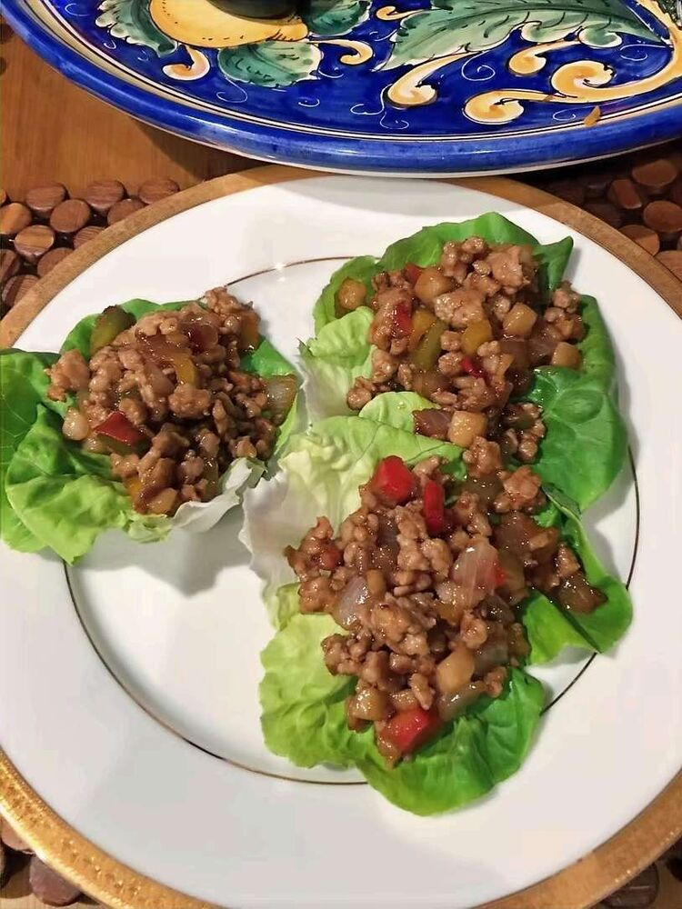

Asian Chicken Lettuce Wrap

Ingredients
- 1 lb ground chicken
- 1 TBS olive oil
- ½ onion minced
- 1 cup red or green pepper diced.
- 1 8 oz can water chestnuts drained and minced.
For the Sauce:
- 3 TBS soy sauce
- 3 TBS hoisin sauce
- 1 TBS sesame oil
- 1 TBS rice vinegar
- 1 TBS peanut butter
- 1 TBS honey
- 2 tsp sweet chili sauce
- ½ tsp garlic powder
- ¼ tsp powdered ginger
To serve
- ¼ cup peanuts crushed.
- Butterhead Lettuce
Instructions
- Whisk together sauce ingredients until well combined.
- Heat olive oil in a frying pan. Once hot, add ground chicken.
- Cook until some pieces are starting to brown. Add onion and cook for 5 minutes or until the onion is becoming translucent.
- Add the peppers and water chestnuts and cook about 5 minutes or until peppers are becoming soft.
- Add sauce and simmer on low heat until the chicken and veggies are evenly coated, and everything is heated through.
- Serve in lettuce leaves, over noodles or rice